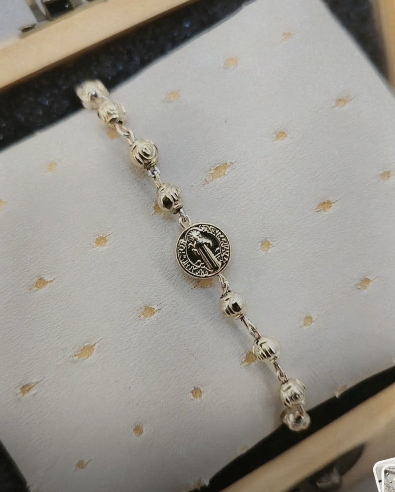
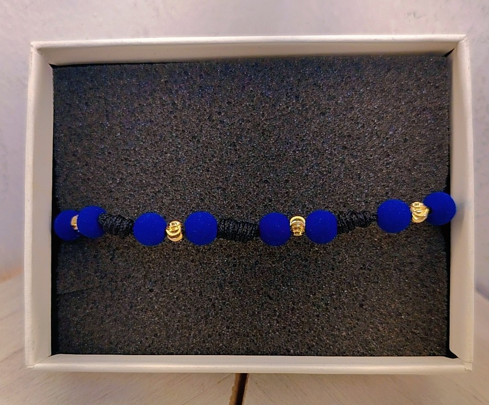
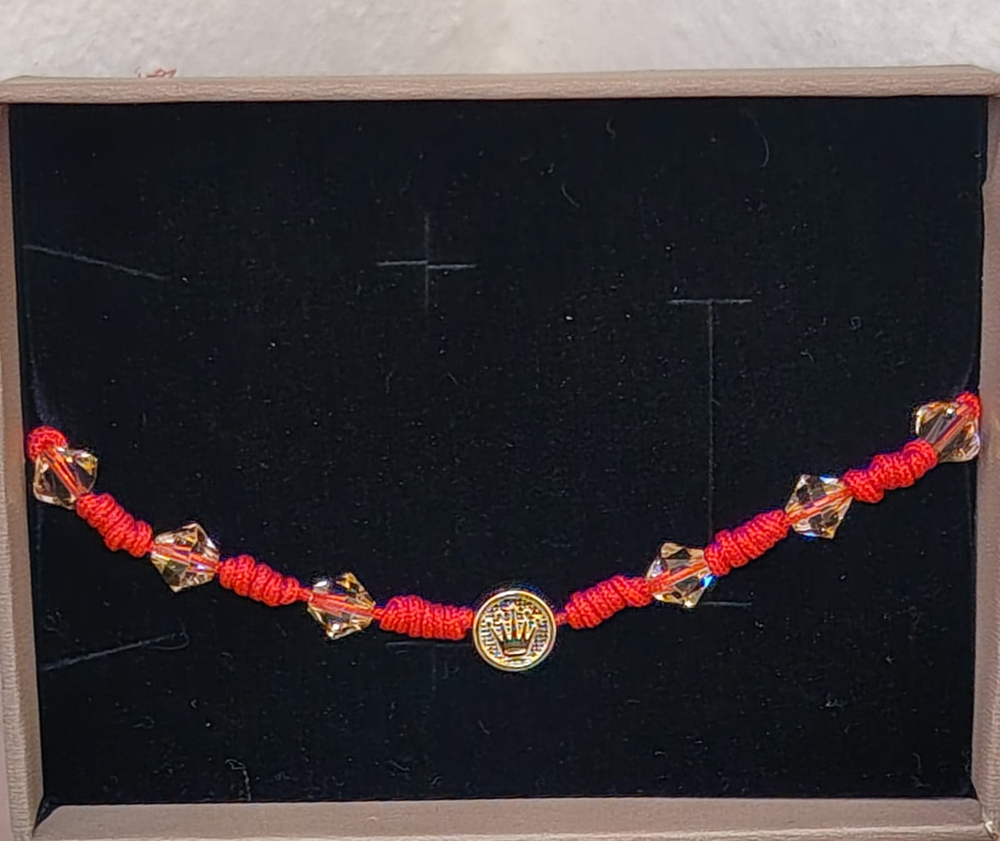
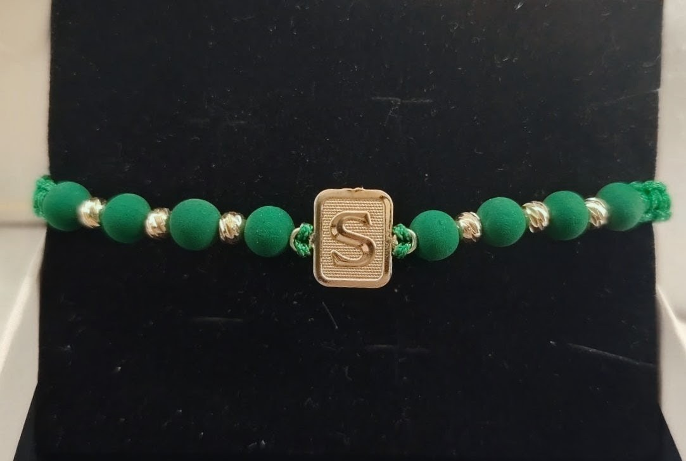
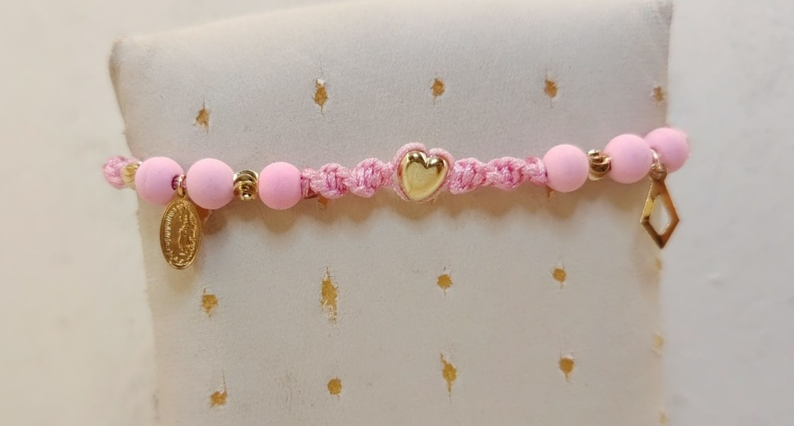
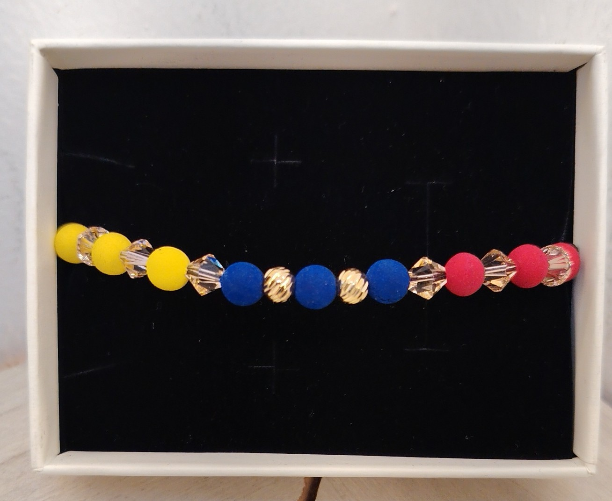
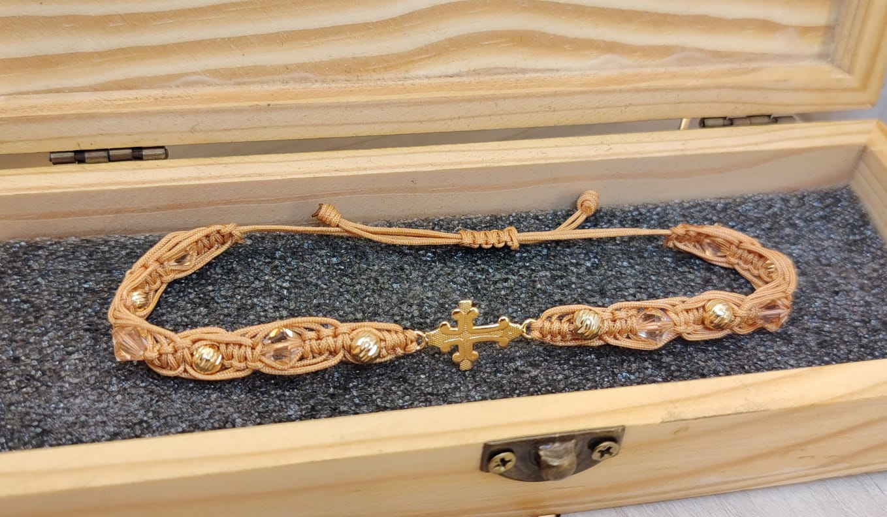
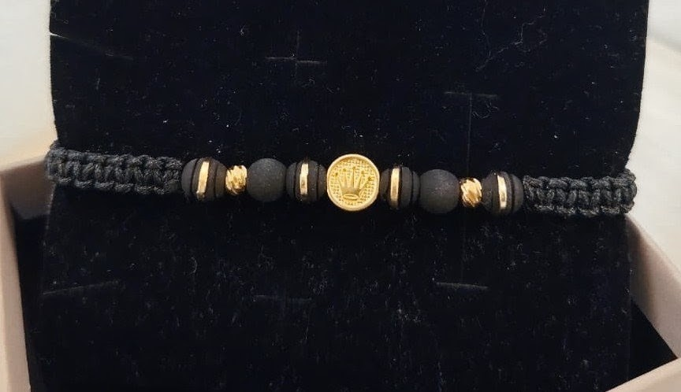

Nuestra Colección de Manillas
.jpeg)
Manilla Bicolor Macramé
Tejido en hilos negro y beige con balines dorados engastados de manera continua.
.jpeg)
Manilla Neopreno & Balines
Tejido beige con detalles intercalados de neopreno negro y balines dorados.
.jpeg)
Manilla Virgen de Guadalupe
Tejido en hilo negro con medalla religiosa dorada, neopreno blanco y balines de lujo.

Manilla Inicial "M" Beige
Tejido fino en hilo beige con dije central de inicial dorada y nudo ajustable.
.jpeg)
Manilla Con Dos Balines de Oro
Tejido en hilo negro con balines de oro laminado de 18k, dando un toque de lujo.

Manilla Con 15 Balines de Oro
Tejido en hilo negro con balines de oro laminado de 18k, se adapta a el estilo de cada cliente.
.jpeg)
Pulsera Carmesí
Pulsera artesanal tejida en hilos negro y blanco, adornada con neopreno rojo y un detalle dorado en el centro. Es cómoda, ligera y fácil de combinar con cualquier ropa para el día a día.
.jpeg)
Manilla Con Inicial
Un accesorio hecho a mano que combina una estructura trenzada en rojo intenso con neopreno rojo y toques dorados. Destaca por llevar tu letra favorita en el centro, convirtiéndola en una pieza muy personal, ideal para combinar y usar todos los días.
.jpeg)
Manilla Macramé
Diseño personalizado con neopreno.
.jpeg)
Manilla Tres Carriles
Manilla personalizada con diseño unico que se adapta a tu estilo.

Manilla virgen de guadalupe
Manilla religiosa personalizada, contiene 8 balines de oro laminados de 18k y 2 balines de plata.

Pulsera Rosario / San Benito de Oro
Pulsera fina elaborada en cadena y balines metálicos dorados facetados con medalla central de San Benito.

Pulsera Azul Imperial con Balines Dorados
Diseño en hilo negro con cuentas mate azul rey y balines metálicos dorados intercalados.

Pulsera Protección Roja con Cristales y Corona
Hilo rojo tejido en macramé con cristales facetados y dije central dorado de corona.

Pulsera Verde Esmeralda con Inicial S
Cuentas mate verde esmeralda con balines dorados y placa rectangular personalizada con la letra S.

Pulsera Romántica Rosa con Medalla y Dije
Tejida en hilo rosa pastel con dije de corazón dorado, medalla religiosa y colgante geométrico.

Pulsera Tricolor con Cristales
Diseño tricolor en cuentas mate (amarillo, azul y rojo) con cristales y balines dorados labrados.

Pulsera de Fe Tejida en Macramé Tono Beige
Tejido ancho de macramé en tono beige con cruz metálica dorada y cristales facetados.

Pulsera Elegante Negra con Dije Corona
Diseño sobrio tejido en macramé negro con cuentas mate, detalles dorados y dije central de corona.

Cadena Serpiente en Oro Laminado
Una cadena elegante y moderna, fabricada con oro laminado de alta calidad. Su diseño minimalista la hace perfecta para usar en ocasiones especiales o como accesorio diario.

Cadena Flecha en Oro Laminado
Lleva tu estilo al siguiente nivel con esta impactante cadena C Arrow. Su diseño geométrico en forma de flecha tridimensional le aporta un brillo único y un carácter vanguardista que atrae todas las miradas.